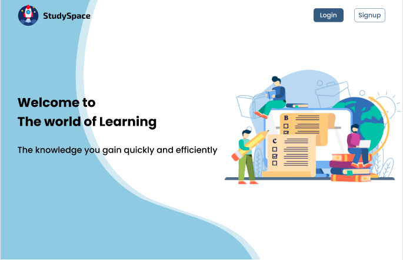

Projects

Spotify Web API Testing
Automated testing of Spotify’s Get Playlist endpoint using Cypress to validate response structure and data accuracy.

StudySpace (E-learning) Testing
Performed functional and UI testing for web and mobile applications with Katalon Studio, ensuring key features met quality standards as part of an agile cross-functional team.